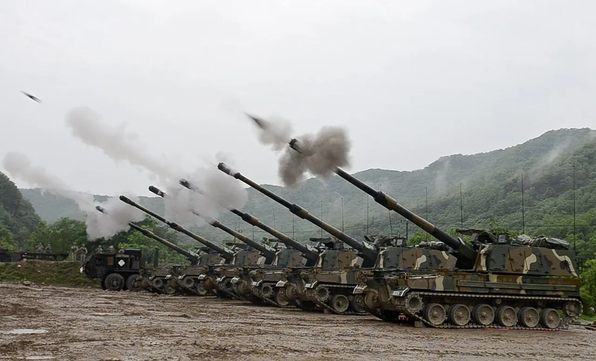

방산주는 큰 수출 계약이 발표될 때마다 주목을 받습니다. 그러나 투자자가 볼 숫자는 계약 금액만이 아닙니다. 실제 납품 일정, 선급금, 원가 상승, 환율, 정부 승인, 유지보수 매출이 현금흐름을 결정합니다.
방산 산업은 국가 안보와 예산이 결합된 시장입니다. 수요는 장기적이지만 계약 체결부터 매출 인식까지 시간이 걸립니다. 그래서 수주잔고가 커도 생산 능력과 부품 조달, 납품 검수, 대금 회수 조건이 좋지 않으면 주가의 기대가 실적으로 늦게 바뀔 수 있습니다.
투자자는 방산주를 뉴스 규모보다 실행 능력으로 봐야 합니다. 어떤 장비를 언제 납품하고, 어느 통화로 대금을 받고, 원가 상승을 계약에 반영할 수 있는지 확인해야 합니다.
계약은 매출이 아닙니다

수출 계약은 발표 순간 기대를 만들지만 매출은 납품과 검수 뒤에 인식됩니다.
장기 계약일수록 원가와 환율 변동이 이익률을 흔들 수 있습니다.
계약 조건에 가격 조정 조항이 있는지 확인해야 합니다.
계약은 매출이 아닙니다을 볼 때는 숫자 하나를 따로 떼어 보지 않는 편이 좋습니다. 수출 계약은 발표 순간 기대를 만들지만 매출은 납품과 검수 뒤에 인식됩니다. 장기 계약일수록 원가와 환율 변동이 이익률을 흔들 수 있습니다. 계약 조건에 가격 조정 조항이 있는지 확인해야 합니다. 이 흐름이 다음 분기에도 이어지는지 확인하면 뉴스의 크기와 실제 투자 가치 사이의 간격을 줄일 수 있습니다.
생산 능력이 병목입니다
관련 영상
K방산 수출과 수주잔고를 분석하는 영상
포탄, 장갑차, 항공기, 미사일은 생산 설비와 숙련 인력이 필요합니다.
부품 공급망이 막히면 수주잔고가 많아도 납품 속도가 늦어집니다.
증설 투자와 협력사 품질 관리가 실적의 선행 지표가 됩니다.
이 대목에서는 숫자 하나를 따로 떼어 보지 않는 편이 좋습니다. 포탄, 장갑차, 항공기, 미사일은 생산 설비와 숙련 인력이 필요합니다. 부품 공급망이 막히면 수주잔고가 많아도 납품 속도가 늦어집니다. 증설 투자와 협력사 품질 관리가 실적의 선행 지표가 됩니다. 이 흐름이 다음 분기에도 이어지는지 확인하면 뉴스의 크기와 실제 투자 가치 사이의 간격을 줄일 수 있습니다.
현금 회수 조건을 봅니다
선급금이 많으면 운전자본 부담이 줄고 프로젝트 안정성이 높아집니다.
대금 회수가 늦으면 영업이익이 좋아도 현금흐름이 약할 수 있습니다.
수출금융과 보증 구조는 방산주 재무 안정성에 직접 연결됩니다.
이 대목에서는 숫자 하나를 따로 떼어 보지 않는 편이 좋습니다. 선급금이 많으면 운전자본 부담이 줄고 프로젝트 안정성이 높아집니다. 대금 회수가 늦으면 영업이익이 좋아도 현금흐름이 약할 수 있습니다. 수출금융과 보증 구조는 방산주 재무 안정성에 직접 연결됩니다. 이 흐름이 다음 분기에도 이어지는지 확인하면 뉴스의 크기와 실제 투자 가치 사이의 간격을 줄일 수 있습니다.
정책 리스크는 항상 있습니다
방산 수출은 정부 승인과 외교 관계의 영향을 받습니다.
분쟁 지역 변화나 정권 교체는 계약 일정과 옵션 물량을 바꿀 수 있습니다.
투자자는 지정학 호재만이 아니라 승인 지연 가능성도 함께 봐야 합니다.
정책 리스크는 항상 있습니다을 볼 때는 숫자 하나를 따로 떼어 보지 않는 편이 좋습니다. 방산 수출은 정부 승인과 외교 관계의 영향을 받습니다. 분쟁 지역 변화나 정권 교체는 계약 일정과 옵션 물량을 바꿀 수 있습니다. 투자자는 지정학 호재만이 아니라 승인 지연 가능성도 함께 봐야 합니다. 이 흐름이 다음 분기에도 이어지는지 확인하면 뉴스의 크기와 실제 투자 가치 사이의 간격을 줄일 수 있습니다.
후속 매출이 진짜 체력입니다
정비, 탄약, 부품, 교육, 업그레이드는 장기 수익성을 높입니다.
첫 납품 이후 운용 국가가 늘면 플랫폼 생태계가 만들어집니다.
일회성 장비 수출보다 반복 유지보수 매출의 비중을 확인해야 합니다.
이 대목에서는 숫자 하나를 따로 떼어 보지 않는 편이 좋습니다. 정비, 탄약, 부품, 교육, 업그레이드는 장기 수익성을 높입니다. 첫 납품 이후 운용 국가가 늘면 플랫폼 생태계가 만들어집니다. 일회성 장비 수출보다 반복 유지보수 매출의 비중을 확인해야 합니다. 이 흐름이 다음 분기에도 이어지는지 확인하면 뉴스의 크기와 실제 투자 가치 사이의 간격을 줄일 수 있습니다.
방산주는 큰 숫자가 매력적이지만 투자 판단은 작은 일정표에서 나옵니다. 계약 금액, 납품 시점, 선급금, 원가 조정, 승인 리스크, 유지보수 매출을 나눠 보면 수주잔고의 질이 보입니다.
좋은 방산주는 수주를 많이 받은 회사가 아니라 수주를 현금으로 바꾸는 회사입니다. 다음 실적에서는 매출 인식 속도, 영업현금흐름, 수출국 다변화, 장기 서비스 매출을 함께 확인해야 합니다.
산업 테마는 스토리가 빠르게 퍼지는 만큼 숫자로 확인하는 과정이 필요합니다. 수주잔고, 납품 일정, 가동률, 가격 전가력, 운전자본을 확인하면 테마가 실제 매출과 현금으로 바뀌는 속도를 가늠할 수 있습니다.
한 기업이 테마 이름을 달고 있다는 이유만으로 같은 수혜를 받지는 않습니다. 병목을 해결하는 기업인지, 단순히 비용을 부담하는 기업인지 구분해야 합니다.
마지막으로 방산·항공우주 글을 읽을 때는 가격이 먼저 움직인 뒤 이유가 붙는 경우가 많다는 점을 기억해야 합니다. 투자자는 결론을 서둘러 정하기보다 공식 자료, 최근 실적, 현금흐름, 밸류에이션, 시장 기대가 서로 같은 방향인지 차분히 확인하는 편이 좋습니다.
산업 테마는 스토리가 빠르게 퍼지는 만큼 숫자로 확인하는 과정이 필요합니다. 수주잔고, 납품 일정, 가동률, 가격 전가력, 운전자본을 확인하면 테마가 실제 매출과 현금으로 바뀌는 속도를 가늠할 수 있습니다.
한 기업이 테마 이름을 달고 있다는 이유만으로 같은 수혜를 받지는 않습니다. 병목을 해결하는 기업인지, 단순히 비용을 부담하는 기업인지 구분해야 합니다.
마지막으로 투자 글을 읽을 때는 가격이 먼저 움직인 뒤 이유가 붙는 경우가 많다는 점을 기억해야 합니다. 투자자는 결론을 서둘러 정하기보다 공식 자료, 최근 실적, 현금흐름, 밸류에이션, 시장 기대가 서로 같은 방향인지 차분히 확인하는 편이 좋습니다.
이 글의 목적은 정답을 대신 내려 주는 것이 아니라 확인 순서를 줄이는 데 있습니다. 관심 종목이나 상품이 있다면 같은 기준을 표로 옮겨 적고, 다음 실적 발표 때 실제 숫자가 어떻게 변했는지 다시 비교해 보는 방식이 가장 안전합니다.
방산주 수출 수주잔고보다 납품과 현금 회수 속도 중요합니다를 다시 점검할 때는 한 번의 뉴스보다 여러 분기의 방향이 중요합니다. 숫자가 좋아지는 이유가 가격인지 물량인지, 비용 절감인지 일회성인지 나누어 보면 기대와 현실의 차이를 더 빨리 알아차릴 수 있습니다.
방산주 수출 수주잔고보다 납품과 현금 회수 속도 중요합니다를 다시 점검할 때는 한 번의 뉴스보다 여러 분기의 방향이 중요합니다. 숫자가 좋아지는 이유가 가격인지 물량인지, 비용 절감인지 일회성인지 나누어 보면 기대와 현실의 차이를 더 빨리 알아차릴 수 있습니다.
방산·항공우주 투자는 이야기가 먼저 퍼지고 숫자가 나중에 확인되는 경우가 많습니다. 그래서 테마에 올라탄 기업이 실제로 어떤 계약을 가졌는지, 매출 인식은 언제 되는지, 원가 상승을 가격에 반영할 수 있는지 따로 확인해야 합니다.
수주잔고가 크다는 말도 충분하지 않습니다. 납품 일정, 선급금, 생산 능력, 협력사 품질, 환율 조건에 따라 같은 수주잔고의 가치는 크게 달라집니다. 투자자는 수주와 현금 회수 사이의 거리를 줄여서 봐야 합니다.
테마가 뜨거울수록 비중 관리는 더 중요합니다. 장기 성장성이 좋아도 주가가 먼저 달리면 다음 실적이 기대를 따라가지 못할 수 있습니다. 테마 이름보다 실적 연결 속도를 기준으로 삼아야 합니다.
또 하나 중요한 점은 기록입니다. 관심 있는 종목이나 상품을 볼 때 오늘의 판단 근거를 짧게 남겨 두면 다음 실적 발표나 시장 변화가 왔을 때 생각이 어떻게 달라졌는지 확인할 수 있습니다. 이 기록은 매수와 매도보다 먼저 투자 습관을 안정시키며, 같은 실수를 반복하지 않게 도와줍니다.
작은 차이를 확인하는 습관이 쌓이면 같은 뉴스에서도 더 침착하게 판단할 수 있습니다.